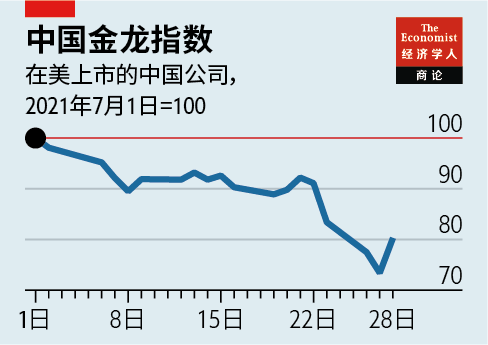
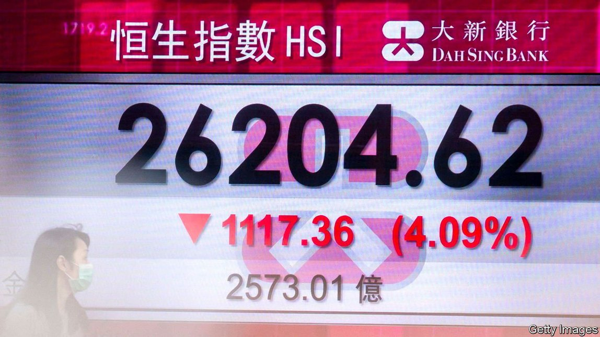
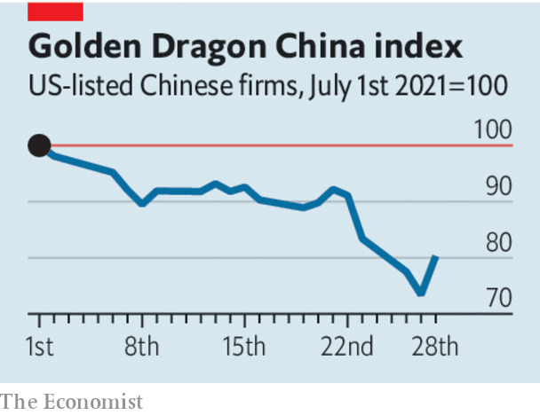

2021-08-05T15:43:07+00:00
【首文】快速变穷
中国整治在线教育行业标志着一个转折点
少一些资本主义，多一些国家干预

致富光荣，据说邓小平曾经这么说过。“富成马云那样显然就没那么光荣了。”去年11月，当马云的蚂蚁集团的上市被中国金融监管机构叫停时，一位投资者如此打趣道。在许多外国投资者看来，这是对中国最出名的亿万富豪的打压，以警告该国其他富豪不要狂妄自大。
但在此后的几个月里，监管打击的范围越来越广。中国两大互联网巨头阿里巴巴和腾讯正在被反垄断机构调查。7月初，网约车公司滴滴在纽约上市几天后就遭到审查。近日，教育科技行业又成了靶子。新出台的规定禁止任何学科类培训机构在国外上市、接受外国投资或追求盈利。也就是说，谁也不应该靠教中小学生致富。
市场对最新官僚命令的反应是大幅抛售。在纽约上市的三大中国在线教育公司的股价跌去了三分之二。恐慌还蔓延到其他在美上市的中国公司。追踪其中最大中国股票的纳斯达克中国金龙指数（Nasdaq Golden Dragon China Index）三天内下跌近20%。中国国内市场也受到传染，股价全线下跌。
中国的喜好现在似乎已很明显。它希望在它的监管范围内，按照它规定的条件，在它自己的交易所里开展融资。这对金融市场的影响很可能会挥之不去。中国自己也许会是最大的输家。
先来看中国以外科技公司的市值受到的影响。以科技股为主的纳斯达克指数也因中国科技股暴跌而遭抛售，因为最近的形势表明投资科技股存在监管风险。在美国，拜登政府也想通过推进反垄断来加强对大科技公司的监管。但美国的反垄断行动是在法律框架内进行的。即使很多人觉得科技巨头赚的钱多到令人发指（Alphabet、苹果、Facebook和微软上周都报告了创纪录的第二季度业绩），也还是有一系列判例限制了监管部门约束这些巨头的程度。如果它们的中国竞争对手困于官僚做派，那对美国的大科技公司来说完全是好事。
而这轮打压会实实在在地损害中国的科技公司。近年来大量涌入的投资者上周在公开市场遭受重创。美国的私人资本也套牢在了中国的创业公司里。这些企业的价值现在实际上已被冻结。年轻的中国公司寻求IPO之路如今近乎危机四伏，而IPO是风险投资家收回资金的可靠途径。许多中国公司通过被称为“可变利益实体”的工具在国外融资，这些工具本质上是合成股票。这条路现在可能被永久封锁了。风险资本家在投资中国的科技创业公司时必定会更加谨慎，无论其前景多么光明。
更让人担忧的是，任何投资，即使是对中国境内的非科技公司，现在都面临着规则随意更改的风险。这将提高中国企业的资本成本。中国证监会在上周匆忙召集国际银行家开会，安抚他们说只有教育类公司是整顿目标。这表明在让市场大为惊骇之后，中国的政策制定者已经意识到他们可能错估了形势。
看起来情形的确如此。资本市场不是监管机构可以随心所欲地打开或关闭的水龙头。诚然，投资者的记忆可能很短暂。但中国正在收获监管上专横的名声，只有开始遵从透明的规则才能摆脱——而这种服从正是共产党所厌恶的。
2021-08-05T15:43:07+00:00
Get poor quickly
China’s crackdown on the online-education business marks a turning-point
Less capitalism, more state
TO GET RICH is glorious, Deng Xiaoping supposedly said. “To get as rich as Jack Ma is clearly not so glorious,” quipped an investor last November when the initial public offering of Mr Ma’s Ant Group was cancelled on the say-so of China’s financial regulators. A lot of foreign investors interpreted it as a slap-down to China’s best-known billionaire and thus a warning to the country’s other plutocrats not to get too big for their boots.
But in the months since then the scope of the regulatory crackdown has grown ever wider. China’s two internet giants, Alibaba and Tencent, are being worked over by the antitrust authorities. Earlier last month Didi Global, a ride-hailing service, was caught in the net just days after it listed in New York. And in the past week the education-technology industry has become a target. New regulations bar any company that teaches subjects on the school curriculum from listing abroad, having foreign investors or making profits. When it comes to teaching schoolchildren, no one should get rich.
The market response to the latest bureaucratic diktat was a sharp sell-off. The share prices of a trio of Chinese online-tutoring firms listed in New York fell by two-thirds. The panic spread to other Chinese firms listed in America. The Nasdaq Golden Dragon China Index, which tracks the biggest stocks of this kind, fell by almost 20% over three days. The contagion took in China’s onshore market, with share prices down across the board.
China’s preferences now seem clear. It wishes to see capital raised on its own exchanges, within its purview and on the terms that it dictates. The effects of this on financial markets are likely to linger. China itself may be the biggest loser.
Start with the effect on the market value of tech firms outside China. The tech-heavy Nasdaq index also sold off in response to the rout of Chinese tech stocks, because the latest episode signalled that investing in technology carries regulatory risk. In America Joe Biden’s administration has also sought to strengthen oversight of big tech, by beefing up antitrust. But trustbusting in America takes place in a legal context. There is a body of jurisprudence that limits how far the authorities can go in clipping the wings of tech giants, even those making profits many find obscene: Alphabet, Apple, Facebook and Microsoft all reported a record second-quarter haul this week. If Chinese rivals are mired in red tape, that is all to the good of big tech in America.
And the clampdown will indeed harm Chinese tech. Investors who piled in during recent years have last week been pummelled in public markets. Private American capital is also tied up in Chinese startups. The value in those ventures is now, in effect, frozen. The route to an IPO for a young Chinese firm—the reliable way for venture capitalists to get their money back—now borders on perilous. A lot of Chinese firms have raised money abroad in vehicles known as variable-interest entities, which are essentially synthetic shares. This route may now be blocked for ever. And venture capitalists will surely be charier about backing Chinese tech startups, however promising.
Still more worrying is that any investment, even in an onshore non-tech firm, is now at risk from arbitrary rule changes. That will raise the cost of capital for Chinese firms. China’s securities regulator hastily convened a meeting with international bankers last week to reassure them that only education-based firms were being targeted. It suggests that China’s policy brass, having startled markets, have realised that they may have miscalculated.
It certainly looks that way. The capital markets are not a tap that regulators can turn on and off when it suits them. True, investors’ memories can be short. But China is gaining a reputation for regulatory high-handedness that it can shed only by starting to follow transparent rules—and that is precisely the sort of subordination the Communist Party abhors. ■
2021-08-05T15:43:07+00:00
【首文】快速變窮
中國整治在線教育行業標誌着一個轉折點
少一些資本主義，多一些國家干預
致富光榮，據說鄧小平曾經這麼說過。“富成馬雲那樣顯然就沒那麼光榮了。”去年11月，當馬雲的螞蟻集團的上市被中國金融監管機構叫停時，一位投資者如此打趣道。在許多外國投資者看來，這是對中國最出名的億萬富豪的打壓，以警告該國其他富豪不要狂妄自大。
但在此後的幾個月里，監管打擊的範圍越來越廣。中國兩大互聯網巨頭阿里巴巴和騰訊正在被反壟斷機構調查。7月初，網約車公司滴滴在紐約上市幾天後就遭到審查。近日，教育科技行業又成了靶子。新出台的規定禁止任何學科類培訓機構在國外上市、接受外國投資或追求盈利。也就是說，誰也不應該靠教中小學生致富。
市場對最新官僚命令的反應是大幅拋售。在紐約上市的三大中國在線教育公司的股價跌去了三分之二。恐慌還蔓延到其他在美上市的中國公司。追蹤其中最大中國股票的納斯達克中國金龍指數（Nasdaq Golden Dragon China Index）三天內下跌近20%。中國國內市場也受到傳染，股價全線下跌。
中國的喜好現在似乎已很明顯。它希望在它的監管範圍內，按照它規定的條件，在它自己的交易所里開展融資。這對金融市場的影響很可能會揮之不去。中國自己也許會是最大的輸家。
先來看中國以外科技公司的市值受到的影響。以科技股為主的納斯達克指數也因中國科技股暴跌而遭拋售，因為最近的形勢表明投資科技股存在監管風險。在美國，拜登政府也想通過推進反壟斷來加強對大科技公司的監管。但美國的反壟斷行動是在法律框架內進行的。即使很多人覺得科技巨頭賺的錢多到令人髮指（Alphabet、蘋果、Facebook和微軟上周都報告了創紀錄的第二季度業績），也還是有一系列判例限制了監管部門約束這些巨頭的程度。如果它們的中國競爭對手困於官僚做派，那對美國的大科技公司來說完全是好事。
而這輪打壓會實實在在地損害中國的科技公司。近年來大量湧入的投資者上周在公開市場遭受重創。美國的私人資本也套牢在了中國的創業公司里。這些企業的價值現在實際上已被凍結。年輕的中國公司尋求IPO之路如今近乎危機四伏，而IPO是風險投資家收回資金的可靠途徑。許多中國公司通過被稱為“可變利益實體”的工具在國外融資，這些工具本質上是合成股票。這條路現在可能被永久封鎖了。風險資本家在投資中國的科技創業公司時必定會更加謹慎，無論其前景多麼光明。
更讓人擔憂的是，任何投資，即使是對中國境內的非科技公司，現在都面臨著規則隨意更改的風險。這將提高中國企業的資本成本。中國證監會在上周匆忙召集國際銀行家開會，安撫他們說只有教育類公司是整頓目標。這表明在讓市場大為驚駭之後，中國的政策制定者已經意識到他們可能錯估了形勢。
看起來情形的確如此。資本市場不是監管機構可以隨心所欲地打開或關閉的水龍頭。誠然，投資者的記憶可能很短暫。但中國正在收穫監管上專橫的名聲，只有開始遵從透明的規則才能擺脫——而這種服從正是共產黨所厭惡的。